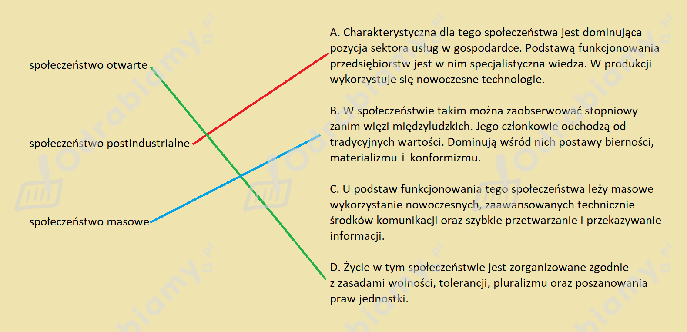

Rozwiązanie 1.:
Poniżej przedstawiono rozwiązanie zadania:

Rozwiązanie 2.:
| (1) społeczeństwo otwarte | [D] Życie w tym społeczeństwie jest zorganizowane zgodnie z zasadami wolności, tolerancji, pluralizmu oraz poszanowania praw jednostki. |
| (2) społeczeństwo postindustrialne | [A] Charakterystyczna dla tego społeczeństwa jest dominująca pozycja sektora usług w gospodarce. Podstawą funkcjonowania przedsiębiorstw jest w nim specjalistyczna wiedza. W produkcji wykorzystuje się nowoczesne technologie. |
| (3) społeczeństwo masowe | [B] W społeczeństwie takim można zaobserwować stopniowy zanik więzi międzyludzkich. Jego członkowie odchodzą od tradycyjnych wartości. Dominują wśród nich postawy bierności, materializmu i konformizmu. |
| -> społeczeństwo informacyjne | [C] U podstaw funkcjonowania tego społeczeństwa leży masowe wykorzystanie nowoczesnych, zaawansowanych technicznie środków komunikacji oraz szybkie przetwarzanie i przekazywanie informacji. |
Rozwiązanie 1.:
a) Na podstawie tekstu źródłowego należy wskazać, że jego autor zmiany formy aktywności w ramach ruchów społecznych upatruje w zmianach zachodzących w zakresie nacisku na "tożsamość, wartości kulturowe oraz proces nadawania (i redefiniowania) znaczeń". J. Nowak zauważył, że współczesne ruchy społeczne "stanowią coraz ważniejszy element globalnego pejzażu aktywności obywatelskiej". Ponadto mogą one wykorzystywać w swoim działaniu nowe media, które wcześniej nie były w zasięgu ruchów społecznych.
b) Przykładowe rozwiązanie:
Moim zdaniem najważniejszą cechą nowych ruchów społecznych jest zapotrzebowanie informacyjne, które stanowi wyznacznik współczesnych czasów. Obecnie mamy do czynienia z ogromnym znaczeniem informacji, które stały się cennym towarem.
Rozwiązanie 2.:
a)
W ostatnich latach - według autora tekstu - zmieniły się formy aktywności w ramach ruchów społecznych, ponieważ wzrosło znaczenie procesu komunikowania się w nowoczesny sposób, przy użyciu nowych technologii (w tym tzw. nowych mediów), a także zasobów informacyjnych. Położono też nacisk na kultywowanie własnych tożsamości i wartości kulturowych.
b)
Ta część zadania ma charakter indywidualny, bo wymaga wyrażenia własnej opinii. Dlatego proponowane rozwiązanie może zawierać wyłącznie przykładowe wskazówki pomocne do samodzielnego opracowania odpowiedzi.
Przykładowa odpowiedź:
Wydaje się, że najważniejszą cechą nowych ruchów społecznych opisanych w tekście jest to, iż dla ich funkcjonowania kluczowe okazują się nowe media. Nowe ruchy społeczne komunikują swoje treści i pozyskują swoich zwolenników w dużej mierze poprzez Internet, w tym dzięki portalom społecznościowym. W związku z tym aktywność obywatelska może realizować się dziś za pośrednictwem sieci i przybierać globalny zasięg działania.
Rozwiązanie 1.:
Przykładowe kryteria oceny rozwoju społeczeństwa informacyjnego:
Rozwiązanie 2.:
Zadanie ma charakter indywidualny. Dlatego proponowane rozwiązanie może przybrać wyłącznie postać przykładowej wskazówki pomocnej do samodzielnego opracowania odpowiedzi.
Przykładowe wskazówki pomocne do samodzielnego sformułowania odpowiedzi:
Społeczeństwo informacyjne jest pojęciem określającym społeczeństwo, w którym informacja jest kluczowym zasobem i wprowadza znaczące zmiany w sposobie funkcjonowania społeczeństwa oraz interakcjach między jego członkami. Obejmuje to rozwój i szerokie wykorzystanie technologii informacyjnych, takich jak komputery i Internet, do przetwarzania, dostarczania i wymiany informacji.
Można - przykładowo - ocenić stopień rozwoju społeczeństwa informacyjnego w Polsce przy pomocy kilku kryteriów, w tym:
Dostępność i szybkość sieci: w Polsce powinna istnieć szeroka dostępność sieci szybkiego Internetu, co pozwala na łatwe i szybkie korzystanie z usług i aplikacji on-line.
Zastosowanie technologii: stopień wykorzystania technologii informacyjnej i komunikacyjnej przez różne sektory społeczeństwa, takie jak edukacja, biznes czy administracja rządowa.
Edukacja: poziom wiedzy i umiejętności w zakresie technologii informacyjnej i komunikacyjnej wśród społeczeństwa, w szczególności wśród dzieci i młodzieży.
Innowacje i rozwój: stopień wprowadzania i rozwijania nowych technologii i usług, co wpływa na rozwój gospodarki i społeczeństwa.
Bezpieczeństwo cybernetyczne: poziom ochrony danych i informacji przed nieuprawnionym dostępem i wykorzystaniem, co jest niezbędne w dobie rosnącego zagrożenia cyberprzestępczością.
Uczestnictwo w kulturze cyfrowej: stopień uczestnictwa społeczeństwa w kulturze cyfrowej, takiej jak korzystanie z social mediów czy usług e-commerce.
Ocena stopnia rozwoju społeczeństwa informacyjnego powinna opierać się na analizie tych i innych kryteriów, uwzględniając różne aspekty rozwoju technologicznego i społecznego w Polsce.